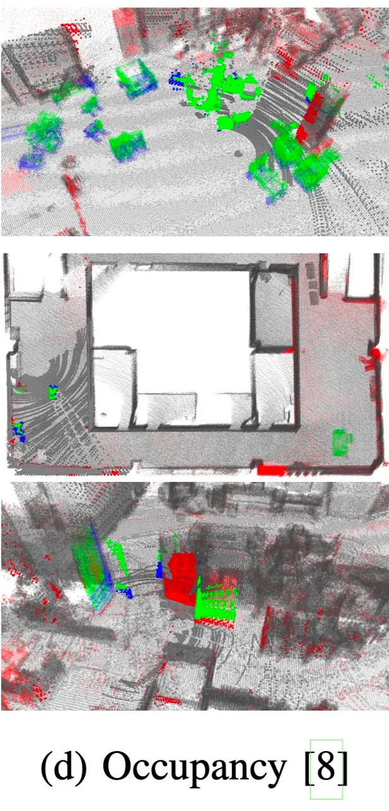
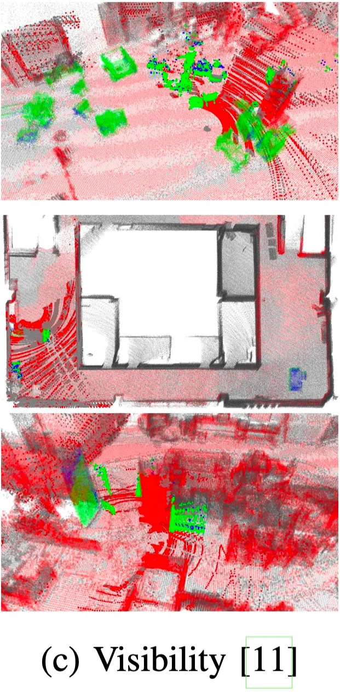
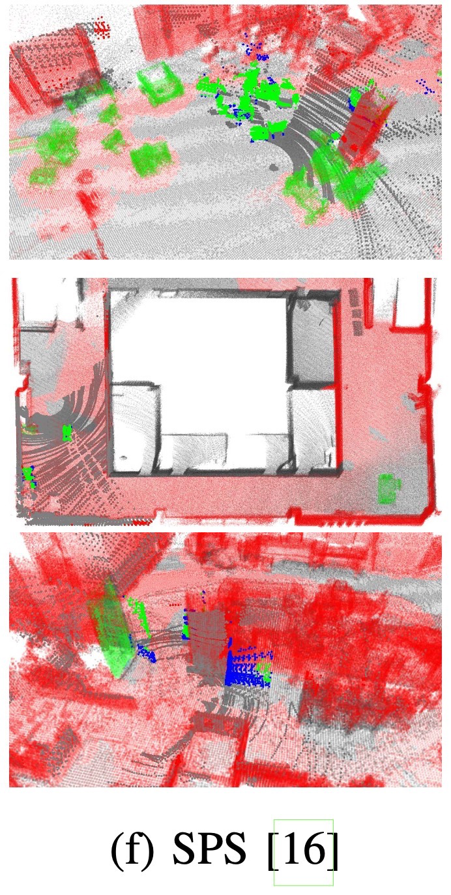
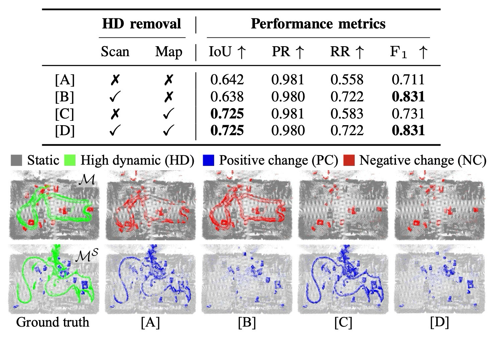

Chamelion: Reliable Change Detection for Long-Term LiDAR Mapping in Transient Environments
Abstract
모바일 로봇이 동적환경에서 navigation을 하려면 change detection이 필요
→ 하지만 빈번한 occlusion, spatio temporal variation 때문에 힘듦
제안한 것
- dual-head network model
- 실시간 change detection
- 장기 맵 관리
- data augmentation strategy
- 다양한 장면에서 구조적 요소 추가
- effective model training
- 과도한 라벨링이 필요 없는 훈련 방법
생략
Introduction
Related Works
Method
- 가상 데이터 생성
- 다수의 temporal observation을 요구하지 않는 single session data를 생성
→ 즉, 본인들은 시퀀스 데이터를 사용하지 않음
- 다수의 temporal observation을 요구하지 않는 single session data를 생성
- 예측 모델 고안
- cross-visibility confidence estimation을 통해 occlusion uncertainty를 모델링
- 맵 업데이트
- confidence-aware change detection에 기반한 확률적 맵 업데이트
가상 데이터 생성

single session LIDAR scan을 이용해 정적 맵을 생성
- : 센서 좌표계에서 시간(timestamp) 때 수집한 scan
- : 추정된 센서의 pose
- : 센서 좌표계를 월드 좌표계로 변환한 것
- : 시간 까지 수집한 월드 좌표계로 변환된 모든 scan으로 구성한 global map
동적 객체 제거
- MOS(Multi-object tracking-based moving Object Segmentation)
→ HD(High Dynamic) object 필터링
: 번째 정적 객체에 대해 개의 데이터를 수집
→ 이들의 집합이
모든 정적 object의 snapshot은 (데이터베이스)에 저장됌
-
-
- 여기서 는 시간 까지 추적된 정적 객체
정적 객체 추가
- ground segmentation
→ 정적 객체들을 추가할 때, 기하학적으로 말이 되는 위치에 추가되게끔
- insertion strategy
- scan (sparse)
- 에만 추가
- map (dense)
- 에 추가
- scan (sparse)
- pseudo label
- 객체들의 위치에 따라 labeling 진행
- scan에는 있지만 map에 없음 → positive change
- scan에는 없지만 map에 있음 → negative change
- 객체들의 위치에 따라 labeling 진행
시간 까지 축적된 scan을 라고 할 때,
변화가 추가된(augmented) 맵 은 아래와 같이 표현 가능
(는 insertion 연산을 의미)
- (4)번 수식은 negative change에 대한 수식을 의미하고, global map에만 object를 추가한다.
- (5)번 수식은 positive change에 대한 수식을 의미하고, scan에만 object를 추가한다.
참고로 하나의 object 에 대해서, positive change와 negative change가 공존하지 않게끔 한다.
이렇게 와 를 통해 synthetic multi-session data를 만들어 효과적인 change detection 학습을 가능하게 한다.
내 데이터셋 생성 과정과의 차이점
예측 모델 고안
- MinkowskiEngine 기반 4D sparse CNN 구조 사용
- 에서 아래 정보를 샘플링
- (은 map의 모든 point)
- (은 scan의 모든 point)
위 두 데이터들에 대해 visibility flag 로 라벨링
- 모든 map points는 0
- 모든 scan points는 1
결과적으로 와 는 로 라벨링된 4D vector가 되고,
이 둘이 합쳐져 4D dense tensor 가 되며,
마지막으로 양자화(quantization) 과정을 통해 4D sparse tensor 가 된다.
Dual-head Structure
아래 2가지를 동시에 예측하게끔 모델을 설계
- change classification
- cross-visibility confidence estimation

위 그림은 change class와 cross visibility confidence를 동시에 예측하는 모습을 시각화하여 보여준다.
- (a)는 예측된 negative change(removal)를 보여준다.
- (b)는 예측된 cross visibility confidence score를 보여준다.
- (c)는 (a)와 (b)를 결합하여, 현재 scan에서 구분 가능한 change만 구분하게끔 하는 것을 보여준다.

class head
- cross-entropy loss를 사용
- : GT class
- : predicted class
(여기서 는 모든 점들의 개수를 의미하고, 는 각 점이 가질 수 있는 class(0, 1, 2)를 의미)
confidence head
- confidence score
- map과 scan에 대응하는 점의 거리로 계산
- : 와 간의 유클리디안 거리
- : scan의 한 점
- : 에 대응하는 map의 한 점
(대응점 는 map에서 위치에서 nearest point로 잡음)
- : 와 간의 유클리디안 거리
- map과 scan에 대응하는 점의 거리로 계산
- GT confidence
- : exponential decay rate
- : voxel size
- : occlusion distance threshold
- 여기서 가 이상이 되면, 0(truncated)이 되도록 함
→ 학습 안정성 및 수렴 속도 향상을 위함
- 여기서 가 이상이 되면, 0(truncated)이 되도록 함
- confidence는 MSE Loss를 사용
- : 샘플링된 point 쌍의 개수
모델 특징
change classification은 고수준의 semantic understanding을 필요로 함
→ class head에 final backbone feature map 를 입력으로 줌
cross-visibility estimation은 저수준의 local geometric cues를 필요로 함
→ confidence head에 earlier-stage feature로 를 사용
최종 Loss
최종 손실함수는 위처럼 와 의 가중합으로 표현됌
맵 업데이트
- positive change: 을 만족할 때
맵 업데이트는 recursive Bayesian filter를 통해 진행
- 여러 시간에 걸쳐 observation을 통합
- occlusion error를 발생시키는 low-visibility region을 제외시킴
업데이트 과정
- : 시간 의 관측에서 얻어진 log-odds
- : prior class probability
- : 예측된 confidence score
Experiment
데이터셋
2개의 데이터셋 사용
- custom dataset
- 노이즈 및 다양한 물체가 포함된 실제 환경 데이터셋
- real-world 환경에서 3종류를 수집
→ 각 1000개의 scan으로 구성 (labeling은 수동으로 붙힘)
- real-world 환경에서 3종류를 수집
- 노이즈 및 다양한 물체가 포함된 실제 환경 데이터셋
- LiSTA dataset
- 물체 변화를 포함하는 실내 오피스 데이터셋 (GT labeling 포함)
→ 모델의 일반화 성능을 평가하기 위함
- 물체 변화를 포함하는 실내 오피스 데이터셋 (GT labeling 포함)
classical & learning-based baseline
비교군
- visibility-based ([11], [12])
- map과 scan 사이의 visibility difference를 탐지
- occupancy-based ([8])
- voxel 기반으로 정적 객체를 정의하고, map/scan 둘 중에 하나만 존재하는 voxel은 change
- MapMOS ([24])
- map/scan 비교 및 volumetric fusion을 통해 high dynamic object 인식
→ 본 연구에서는 pseudo-labeled data로 재학습 시킴 (원래 모델은 SemanticKITTI-MOS 데이터로만 학습됌)
- map/scan 비교 및 volumetric fusion을 통해 high dynamic object 인식
- SPS
- self-supervised network를 기반으로 stability score를 예측
→ 고정된 threshold 값 이하의 score를 가지면 change로 분류
- self-supervised network를 기반으로 stability score를 예측
평가
평가 지표
scan과 map에 대해 각각 다른 지표를 사용해서 평가
(scan은 Scan-Wise / map은 Map-wise)
⇒ scan은 다수의 프레임, map은 여러개의 프레임이 누적된 하나의 맵이기 때문에 평가도 각자 해줘야 함
- Scan-wise
- IoU(Intersection over Union)
- : True Change (True Positive 정답)
- : False Change (False Positive 오예측)
- : False Statics (False Negative 예측 자체를 못함)
- IoU(Intersection over Union)
- Map-wise
-
-
-
세부 구현
- 데이터셋 준비
- Training Dataset
- 이전 가상 데이터 생성(augmentation) 방법을 이용해 baseline 데이터셋에 변화 추가
- Evaluation Dataset
- Training Dataset의 baseline과는 다른 환경의 데이터셋 (가상 데이터 생성은 동일)
- Training Dataset
- 학습 준비
- input quantization
-
- loss function
-
- confidence score calculation
-
-
- hyperparameter
- epoch: 50
- batch size: 2
- optimizer: Adam
- model selection: best evaluation
- input quantization
- 추론 준비
- LiSTA dataset
- reliable scan/map update를 보장하기 위해 LiSTA 데이터셋에 최적화한 를 사용
- HD object 제거
- LiSTA dataset
평가 결과

- occupancy-based method

- 가장 낮은 IoU score
- visibility & occupancy method

- 상당한 false change points
→ geometric threshold-based change detection 모듈은 data occlusion과 noise에 취약
- 상당한 false change points
- deep learning-based
- 기하학적 모순이 없어 다른 method들 대비 robust한 성능을 보임

- SPS
- pure regression network
→ change detection의 경계가 애매함 & threshold selection에 민감

- ground-level regions 근처에서 false change points 존재
- pure regression network
- Chameleon & MapMOS
- classification-based network
- scan-wise IoU에서 SPS를 능가하는 성능을 보임
- classification-based network
- SPS & MapMOS
- 둘 다 map-wise evaluation에서 geometry-based method에 비해 성능이 안나옴
- SPS
- 학습 때, scan points가 있는 voxel에서만 stability score를 계산 (다른 voxel은 무시)
→ 이는 부정확한 예측으로 이어짐
- 학습 때, scan points가 있는 voxel에서만 stability score를 계산 (다른 voxel은 무시)
- MapMOS
- scan points가 존재하는 곳에서만 change 분류
→ 관측이 안되는 지역에 대한 예측을 실패
- scan points가 존재하는 곳에서만 change 분류
- Chameleon
- cross-visibility로 map과 scan points 둘 다 사용
- visibility confidence에 기반한 Bayes filter를 사용한 맵 업데이트
- low confidence region에서는 업데이트 진행 안함
- SPS
- 기하학적 모순이 없어 다른 method들 대비 robust한 성능을 보임
LiSTA dataset에서 평가
- 평가 결과

정량적 평가 (Scan-wise / Map-wise) 
정성적 평가 - Chameleon / MapMOS
- scan-wise
→ change detection에서 강건한 성능 보임
- map-wise
- geometry-based 방법들 대비 높은 preservation, 낮은 rejection rate
- scan-wise
- Chameleon / MapMOS
- LiSTA dataset의 특성
- 불연속적인 위치에서 수집된 scan 데이터로 구성
→ Chameleon에서 보수적인 map update와 낮은 rejection 비율로 이어짐
→ 하지만 real-world에서는 충분한 observation이 제공되니 크게 문제될건 없음
- 불연속적인 위치에서 수집된 scan 데이터로 구성
map 해상도 & 정합 오류
학습 데이터셋 (augmented)
- single session 실내 환경 기반으로 구성
- 특징
- 작은 voxel 크기
- 적은 drift
⇒ 하지만 real-world multi-session 환경에서는 voxel 크기 및 map-scan 정합이 불완전할 수 있음
아래 그림은 map voxel 크기 및 정합 노이즈의 영향을 분석한 ablation study 결과를 보여준다.

map voxel 크기
- voxel 크기가 0.05일 때 scan-wise IoU가 가장 높았고,
결과적으로 voxel 크기는 0.1일 때가 가장 적절(peak)하다고 판단했다고 한다.
정합 노이즈
- map-scan 사이의 정렬 오차를 주기 위해 map-scan 정합 행렬 에 가상 노이즈를 추가했다.
-
→ perturbation level
- translation
- roll/pitch
- yaw
-
→ translation noise
-
→ rotation noise
-
→ mapping(rotation vector → skew-symmetric form)
-
- 결과적으로 map-scan 정렬 오차가 커질수록 가 감소함
→ 이는 안정적인 pseudo-label supervision을 위해서는 정확한 map-scan 정렬이 필요하다는 것을 의미
동적 객체 제거
LD(Low Dynamic) change detection을 평가하기 위해 HD(High Dynamic) object 제거
평가
- 데이터셋: Const-1F 시퀀스
- HD points
- scan points: 4.6%
- map points: 6.46%
- HD points
- 결과

- map-wise : 71.1% → 83.1%
- scan-wise : 63.8% → 72.5%
⇒ HD object는 LIDAR change detection에 있어서 방해가 됌
Runtime

추론은 RTX 3060과 Orin NX에서 진행
→ 임베디드 시스템에서는 FPS가 2.74로 느리게 도작하긴 했지만, 정량적 평가 결과는 3060과 비슷하게 나옴
Ablation Study
Data Augmentation
- Manual vs Pseudo

summarized performance - Custom
- Custom(M): 4,700 manually annotated labels
- Custom(P): 5,783 pseudo labels
⇒ Custom(P)가 과 면에서 Custom(M)을 능가함
- Custom(P)가 Custom(M)보다 더 다양한 환경 변화를 반영하기 때문
- LiSTA
- 학습
- Simu-1
- LiSTA(M)
- LiSTA(P)
- Simu-1
- 추론
- Simu-2, Simu-3

LiSTA dataset evaluation performance ⇒ LISTA(P)가 Simu-1 시퀀스의 기존 GT label을 고의로 무시하여 학습함에도 불구하고, LISTA(M)보다 더 높은 성능을 보임
→ 이는 제안된 augmentation 방법이 여러 데이터셋에 잘 일반화한다고 해석 가능
- Simu-2, Simu-3
- 학습
- Custom
Network Design

- dual-head structure
- [A]: without confidence head
→ occluded region에 대한 잘못된 학습 (FS 증가)
- [A]: without confidence head
- backbone feature division
- [B]: only high-level feature (semantically rich)
- 의미적으로는 풍부하지만 기하학적 정보가 부족
→ 대담한 예측을 초래하고, 불확실한 지역에서 부정확한 업데이트 진행
- 의미적으로는 풍부하지만 기하학적 정보가 부족
- [C]: only low-level feature
- 제일 적절함
- [B]: only high-level feature (semantically rich)
Confidence Threshold

- Real-World Custom Dataset
- : 0.5
→ 노이즈 & 정합 오차로 엄격하게 줌
- : 0.7
→ 좀 완화해서 주는게 좋은 결과를 얻음
- : 0.5
- LiSTA Dataset
- : 0.6
→ drift가 없고 맵 업데이트도 적어 느슨하게 주니 좋은 결과를 얻음
- : 0.5
→ scan이 적고 업데이트도 적어 엄격하게 주니 좋은 결과를 얻음
- : 0.6
느낀점
(작성중…)
향후 계획
Comments